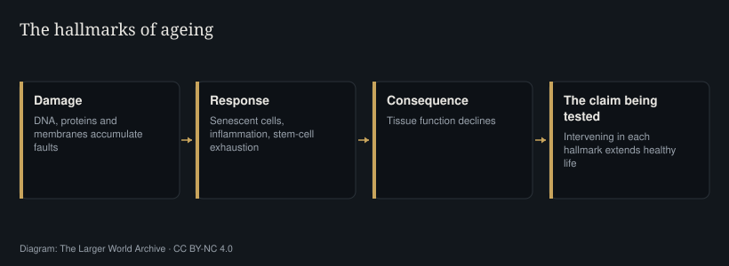

The theories
Mutation accumulation (Medawar) says selection is weak after reproduction, so deleterious mutations that act late accumulate. Antagonistic pleiotropy (Williams) says some genes are beneficial early and harmful late, and selection favours the early benefit. The disposable soma theory (Kirkwood) says organisms trade investment in repair against reproduction, and ageing is the accumulated damage from that trade.
Maps, diagrams and images

On top of those sit the mechanistic hallmarks: genomic instability, telomere attrition, epigenetic alteration, loss of proteostasis, mitochondrial dysfunction, cellular senescence, stem cell exhaustion and altered intercellular communication.
The interventions
Caloric restriction extends lifespan in rodents and is being tested in primates with mixed results. Rapamycin, senolytics and metformin are under study in humans, with no demonstrated lifespan effect yet. The mouse results that generate headlines have a poor record of translating to humans.
Documented: the hallmarks, and the trade-off framework.
Well supported: ageing as accumulated damage with several contributing processes.
Contested: which process is primary, and whether any is a drug target.
Not established: any intervention that extends human lifespan.
The honest label: live debate — one of biology's largest open problems, with a great deal of confident marketing around it.
Why it is in the archive
Because the longevity industry makes claims that the science does not support, and because the honest position — several overlapping mechanisms, no lever — is more interesting than the supplement advertisements.
Open resources on this topic
- BookThe clock of ages : why we age--how we age--winding back the clock — Medina, John, 1956- · 1996 (Internet Archive, free to read)
- BookBorrowed time : the science of how and why we age — Armstrong, Sue (Writer on science), author · 2019 (Internet Archive, free to read)
- BookHow and why we age — Hayflick, Leonard · 1994 (Internet Archive, free to read)
- PapersOpen-access articles: DOAJ · PubMed Central · Internet Archive Scholar
- BooksPublic-domain and borrowable copies: Open Library · Project Gutenberg · Google Books
More images
Cite this page
Momin, S. (2026). Why We Age. The Larger World Archive. https://drsamonline.github.io/LARGE_GLOBE/why-we-age.htmlMomin, Sohil. “Why We Age.” The Larger World Archive, 2026, https://drsamonline.github.io/LARGE_GLOBE/why-we-age.html.Momin, Sohil. “Why We Age.” The Larger World Archive, 2026. https://drsamonline.github.io/LARGE_GLOBE/why-we-age.html.@misc{why2026why,
author = {Momin, Sohil},
title = {Why We Age},
year = {2026},
howpublished = {The Larger World Archive},
url = {https://drsamonline.github.io/LARGE_GLOBE/why-we-age.html},
note = {Last reviewed 20 November 2026}
}Last reviewed 20 November 2026 · Corrections policy · this page is not peer reviewed
Sources for this page
- Wikipedia, “Ageing” — the theories and the hallmarksen.wikipedia.org
- Wikipedia, “Disposable soma theory” — the trade-off accounten.wikipedia.org
- Wikipedia, “Hallmarks of aging” — the mechanistic listen.wikipedia.org
- Wikipedia, “Senolytic” — one of the candidate interventionsen.wikipedia.org